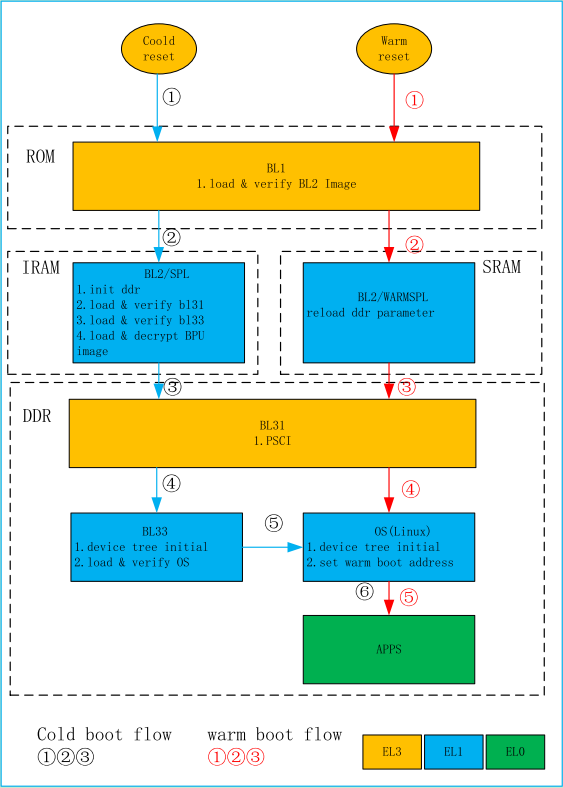
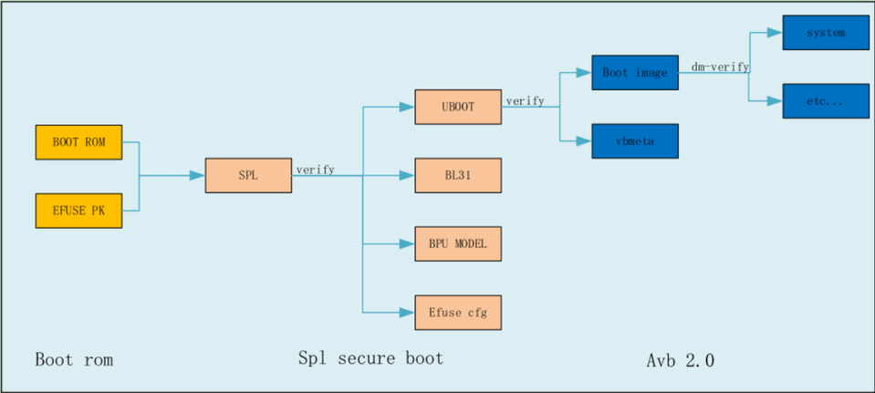

4.2. 硬件点亮指引
4.2.1. 系统启动流程图

上电分为冷启动和热启动两种，热启动特指休眠唤醒流程，其他方式如掉电上电，reboot命令等均为冷启动
流程说明：
Power On Reset时跳转到BL1执行，运行状态EL3
BL1将会跳转到BL2中去执行，运行状态切换到EL1，冷启动时BL2为称SPL,热启动时称为WARM SPL
BL2/SPL负责初始化DDR，加载BL31、BL33和BPU加密模型的镜像，并做校验。然后BL2通过SMC调用，跳转到BL31，BL31运行在EL3状态。WARMSPL只负责从sram中重新load ddr参数。
BL31初始化PSCI、向量表后，跳转到BL33, BL33运行在EL1状态
BL33做device tree初始化，加载和校验OS，然后启动OS，OS运行在EL1状态
OS启动完成，开始运行用户层的服务进程，用户层服务运行在EL0状态
在整体的启动流程中，系统的安全启动（Secure Boot）以层级的方式逐级向下校验，总体流程如下图所示

Secure Boot的验证流程见上图所示，bootrom对SPL镜像进行校验。SPL校验通过之后，SPL再去加载并校验UBoot，BL31，BPU模型；系统进入UBoot之后，再由UBoot来使用AVB校验OS内核镜像（boot image，包含ramdisk，dtb等）。在OS启动之后，通过OS支持的dm-verity来校验对应的系统分区。bootrom校验spl和spl校验bl31是强制性的，其余的如spl校验uboot和bpu，以及uboot通过avb校验kernel，和kernel使用dm-verity校验filesystem都可以通过eFUSE进行配置，详细情况参考第五章“eFUSE的烧写”。
下面将从最小系统制作、上板调试、功能摸底等方面，详细介绍X3系统的硬件点亮过程。大致流程如下：
硬件回板前，根据硬件设计完成最小系统的制作，主要包含如下几方面：
BSP代码中新增板级配置文件 board_***_config.mk
在uboot、kernel中添加新的配置文件、设备树（管脚复用、功能开关等）
根据硬件设计完成网口、USB口的驱动适配
修改管脚电压域配置（重要：配置不对会导致无法预知的问题，甚至烧坏硬件）
硬件回板后，检查硬件状态并尝试烧录最小系统镜像，主要步骤如下：
外观检查，确认硬件没有漏贴、错贴情况
设备上电，测量芯片供电是否正常
连接串口，确认上电后debug串口是否有log打印，无打印说明芯片启动异常，需要排查硬件
烧录镜像，使用地平线升级工具升级最小系统。
镜像烧录后设备如无法正常启动，需要通过串口log判断问题原因，具体如下：
启动流程卡在miniboot阶段
确认ddr型号、容量识别是否有误
确认ddr train是否未通过
确认uboot加载是否存在异常
启动流程卡在uboot阶段
确认kernel加载是否存在异常
确认cmdline参数是否存在异常
系统启动并进入到kernel后，需要确认如下信息：
确认内核启动日志，确认内核模块、设备驱动初始化正常
确认根文件系统和/etc/fstat文件中配置的分区挂载正常
确认系统能正常进入到shell终端，并通过串口登录
确认网络、USB等端口可以正常使用
4.2.2. 镜像制作
4.2.2.1. 新增板级配置
为保证系统兼容性，建议为每款新硬件创建单独的板级配置文件。以device\horizon\x3\board_yocto_emmc_abboot_config.mk文件为例，其配置内容如下：
#!/bin/bash
# 编译后镜像输出路径
export HR_IMAGE_DEPLOY_DIR=${HR_TOP_DIR}/deploy
# 可以设置整个系统的版本信息，在OTA升级中会有涉及
export HR_BSP_VERSION="x3j3_lnx_db_$(date '+%Y%m%d')"
# 配置交叉编译工具链
export ARCH=arm64
export TOOLCHAIN_PATH=/opt/gcc-ubuntu-9.3.0-2020.03-x86_64-aarch64-linux-gnu
export CROSS_COMPILE=${TOOLCHAIN_PATH}/bin/aarch64-linux-gnu-
export TOOLCHAIN_LD_LIBRARY_PATH=${TOOLCHAIN_PATH}/lib/x86_64-linux-gnu/
# avbtools工具脚本存放路径，在对kernel和分区文件系统添加校验信息时需要使用到（mk_system.sh）
export HR_AVB_TOOLS_PATH=${HR_TOP_DIR}/build/tools/avbtools
# key_management_toolkits工具脚本存放路径，在编译miniboot、uboot添加header信息时使用，里面也存放了校验需要使用的key文件
export HR_KEY_MANAGEMENT_TOOLKITS_PATH=${HR_TOP_DIR}/build/tools/key_management_toolkits
# 生成uart启动固件时需要使用到的脚本工具，配合（./xbuild.sh foctory）命令使用
export HR_MK_UART_BOOT_PACKAGE_TOOLS_PATH=${HR_TOP_DIR}/build/tools/uart_usb_boot
# 配置存储介质，支持 "emmc", "nand", "nor"
export HR_BOOT_MODE="emmc"
# 备份还原模式，支持AB备份和golden模式（需要设置 HR_KERNEL_WITH_RECOVERY = true），每种模式对应的分区表有区别，需要同步修改分区表
export HR_OTA_UPDATE_MODE="AB"
# 分区表配置文件所在目录和文件名
export HR_GPT_CONF_DIR=${HR_TOP_DIR}/"device/horizon/x3"
export HR_GPT_CONF_FILENAME="emmc_abboot_gpt.conf"
# Miniboot相关配置
# miniboot 在引导uboot启动时，加载uboot的内存地址
export HR_UBOOT_IMAGE_LOAD_ADDR="4000000"
# miniboot读取的uboot镜像大小，如果用户编译的uboot.img镜像超过了2MB,此处和分区中uboot的分区大小都需要相应修改
export HR_UBOOT_SIZE=2097152 #2M SIZE
# 打包几个分区镜像进miniboot分区，1代表miniboot分区的spl镜像前只有mbr和gpt，2代表spl之前还有例如veeprom分区这种分区
export HR_PACK_PART_NUMBER_IN_MINIBOOT=2
# 芯片类型： x3
export HR_CHIP_TYPE="x3"
# 芯片核心板类型: auto(0) | x3som(1) | j3som(2) | x3sdb(3), 或者 0-15之间的数字，用于指示核心板类型
export HR_SOM_TYPE="x3sdb"
# 使用的基础硬件参考设计，主要影响ddr的pcb走线，一定要正确，否则ddr training不过。 可选参数 "x3dvb" "x3sdb"
export HR_BASE_BOARD_TYPE="x3sdb"
# DDR参数配置
# 频率可选参数 "667" "1600" "2133" "2640" "2666" "3200" "3600"
export HR_DDR_FREQ="3200"
# 厂家可选参数 "hynix" "micron" "samsung"
export HR_DDR_MANUFACTURE="samsung"
# ddr类型可选 "LPDDR4" "LPDDR4X" "DDR4"
export HR_DDR_TYPR='LPDDR4'
# ddr容量大小 "1" "2" "4", 可不配置，支持自动识别
export HR_DDR_CAPACITY="2"
# 当相同ddr厂家、类型、频率时有多组ddr参数时，需要通过这个配置项来做区分
export HR_DDR_ALTERNATIVE=2
# 建议：每次新增核心板时都对应添加一套 HR_SOM_TYPE、uboot_config_file、kernel_config_file、uboot和kernel下的dts
# uboot 编译配置文件，在这个配置文件中需要指定使用的dts文件
export HR_UBOOT_CONFIG_FILE=xj3_soc_defconfig
# kernel 配置
# kernel的设备树通过 HR_SOM_TYPE 和 HR_BASE_BOARD_TYPE 组合后的数字(例如：304)，在tools/dtbmapping/dtb_mapping_xj3.json匹配
# kernel 编译配置文件
export HR_KERNEL_CONFIG_FILE=xj3_perf_defconfig
# golden 模式需要编译 recovery 分区， HR_OTA_UPDATE_MODE="golden"时需要配置为"true"
export HR_KERNEL_WITH_RECOVERY="false"
# rootfs 配置
# X3M 支持 yocto 和 ubuntu 两种根文件系统，在此处指定根文件系统类型和预编译的文件系统路径
export HR_ROOTFS_TYPE=yocto
export HR_ROOTFS_DIR=${HR_TOP_DIR}/system/rootfs_yocto
# 根文件系统中是否集成内核的驱动模块ko文件
export HR_ROOTFS_WITH_KO="true"
# 根文件系统中是否集成地平线多媒体接口库文件
export HR_ROOTFS_WITH_MEDIA_LIBS="true"
# 根文件系统的分区名，需要和分区表配置对应
export HR_ROOTFS_PART_NAME="system"
# 是否对根文件系统添加avb校验，支持镜像安全
export HR_ROOTFS_AVB_VERITY="true"
# 根文件系统类型，请在分区表中全部设置为none，统一在这里进行设置，因为uboot也依赖这个配置来设置启动项，支持 "ext4", "squashfs"
export HR_ROOTFS_FS_TYPE="ext4"
# 环境变量配置标志，用来标识当前env环境已经完成了板级配置项的设置
export HR_IS_BOARD_CONFIG_EXPORT="true"
分区表配置
分区表配置主要包含HR_OTA_UPDATE_MODE、HR_GPT_CONF_DIR、HR_GPT_CONF_FILENAME三个配置选项：
# 备份还原模式，支持AB备份和golden模式（需要设置 HR_KERNEL_WITH_RECOVERY = true），每种模式对应的分区表有区别，需要同步修改分区表
export HR_OTA_UPDATE_MODE="AB"
# 分区表配置文件所在目录和文件名
export HR_GPT_CONF_DIR=${HR_TOP_DIR}/"device/horizon/x3"
export HR_GPT_CONF_FILENAME="emmc_abboot_gpt.conf"
HR_OTA_UPDATE_MODE表示升级方式，目前支持AB、golden两种选项。含义如下：
AB：支持AB分区升级功能，对应emmc_abboot_gpt.conf分区表。
golden：支持recovery分区升级功能，对应emmc_golden_boot_gpt.conf分区表。
HR_GPT_CONF_DIR和HR_GPT_CONF_FILENAME表示分区表路径和文件名。
分区表格式说明
以device/horizon/x3/emmc_golden_boot_gpt.conf文件为例，分区表的书写方法如下：
1:veeprom/veeprom.img:none:34s:39s:0
1:miniboot/${UBOOT_SPL_NAME}:none:40s:2047s:1
0:miniboot/${UBOOT_WARM_SPL_NAME}:none:552s:807s:1
0:miniboot/${DDR_IMAGE_NAME}:none:808s:1831s:1
0:miniboot/${KEY_IMAGE_NAME}:none:1832s:1839s:1
0:miniboot/${EFUSE_IMAGE_NAME}:none:1840s:1847s:1
0:miniboot/${BL31_IMAGE_NAME}:none:1848s:2047s:1
1:uboot/uboot.img:none:2048s:6143s:1
1:ubootbak/uboot.img:none:6144s:10239s:1
1:vbmeta/vbmeta.img:none:10240s:10495s:1
1:boot/boot.img:none:10496s:30975s:1
1:recovery/recovery.img:none:30976s:61695s:1
1:system/system.img:ext4:61696s:368895s:1
1:bpu/${BPU_IMAGE_NAME}:none:368896s:573695s:0
1:app/app.img:ext4:573696s:2670847s:0
1:userdata/userdata.img:none:2670848s:15269751s:0
分区表字段由“:”进行分隔，各字段名称如下：
分区使能:分区名及其内容路径:分区文件系统:分区起始位置:分区终结位置:分区是否合入主镜像
各字段含义如下：
分区使能：表示创建以分区名为文件名的单独分区镜像，当分区使能为0时，该行内容会被合入前一个独立分区的镜像中
分区名及其内容路径：以“/”为界，第一部分为其分区名，会在以分区名命名的文件夹下存放分区内容
分区文件系统：管理分区内容的文件系统，目前可使用ext4、squashfs等文件系统进行创建，若需要使用其它文件系统，请填入none并建立对应文件系统镜像，将镜像路径填入“分区名及其路径”中
分区起始位置：从生成镜像0位置开始计算的分区起始位置，如30, 30k, 30m,30s。无单位时表示byte，k为KiB，m为MiB，s为512Byte的Sector，默认使用sector为单位
分区终止位置：分区终止位置计算方法：起始位置+分区大小 – 1
分区是否合入主镜像：表示该分区镜像是否应该被打包到主镜像，0：不打包、1：打包
miniboot参数配置
miniboot为X3系统保留引导程序，其参数配置默认不需要修改，以下几种情况除外：
修改uboot镜像的内存加载地址，对应HR_UBOOT_IMAGE_LOAD_ADDR字段
修改uboot分区大小，对应HR_UBOOT_SIZE字段
修改miniboot分区，对应HR_PACK_PART_NUMBER_IN_MINIBOOT字段
# Miniboot相关配置
# miniboot 在引导uboot启动时，加载uboot的内存地址
export HR_UBOOT_IMAGE_LOAD_ADDR="4000000"
# miniboot读取的uboot镜像大小，如果用户编译的uboot.img镜像超过了2MB,此处和分区中uboot的分区大小都需要相应修改
export HR_UBOOT_SIZE=2097152 #2M SIZE
# miniboot分区镜像文件打包种类，1代表miniboot打包mbr、gpt、spl镜像，2代表miniboot打包veeprom、mbr、gpt、spl镜像
export HR_PACK_PART_NUMBER_IN_MINIBOOT=2
DDR参数配置
板级配置文件board_xxx_config.mk中包括DDR参数配置部分，用户需要根据DDR选型情况对参数配置进行修改，主要包含ddr频率、厂家、类型、容量（可不配置）和参数索引等内容。X3平台支持的DDR和配置请查看 X3 DDR支持列表和板级配置
# DDR参数配置
# 频率可选参数 "667" "1600" "2133" "2640" "2666" "3200" "3600"
export HR_DDR_FREQ="3200"
# 厂家可选参数 "hynix" "micron" "samsung"
export HR_DDR_MANUFACTURE="samsung"
# ddr类型可选 "LPDDR4" "LPDDR4X" "DDR4"
export HR_DDR_TYPR='LPDDR4'
# ddr容量大小 "1" "2" "4", 可不配置，支持自动识别
export HR_DDR_CAPACITY="2"
# 当相同ddr厂家、类型、频率时有多组ddr参数时，需要通过这个配置项来做区分
export HR_DDR_ALTERNATIVE=2
4.2.2.2. Uboot参数配置
板级配置文件board_xxx_config.mk中会指定uboot中使用的配置文件。为保证系统兼容性，建议为每款硬件新增uboot配置文件和设备树文件，文件分别位于uboot/configs/和uboot/arch/arm/dts/目录中。uboot相关的板级配置项如下：
# 建议：每次新增核心板时都对应添加一套 HR_SOM_TYPE、uboot_config_file、kernel_config_file、uboot和kernel下的dts
# uboot 编译配置文件，在这个配置文件中需要指定使用的dts文件
export HR_UBOOT_CONFIG_FILE=xj3_soc_defconfig
uboot所用设备树在xj3_soc_defconfig配置文件中指定，例如CONFIG_DEFAULT_DEVICE_TREE="hobot-xj3-soc"。
4.2.2.3. Kernel参数配置
板级配置文件board_xxx_config.mk中会指定kernel使用的配置文件、board type和DDR dq map。为保证系统兼容性，建议为每款硬件新增kernel配置文件和设备树文件，文件分别位于kernel/arch/arm64/configs/和kernel/arch/arm64/boot/dts/hobot/目录中。
配置项HR_KERNEL_CONFIG_FILE用于指定kernel所用的配置文件，例如：
# kernel 配置
# kernel的设备树通过 HR_SOM_TYPE 和 HR_BASE_BOARD_TYPE 组合后的数字(例如：304)，在tools/dtbmapping/dtb_mapping_xj3.json匹配
# kernel 编译配置文件
export HR_KERNEL_CONFIG_FILE=xj3_perf_defconfig
配置项HR_SOM_TYPE用于指定硬件board type，其中0-5已被地平线开发板占用，用户需要从6-15中进行选择。 配置项HR_BASE_BOARD_TYPE用于指定硬件DDR dq map方式，目前参考设计提供了x3dvb、x3sdb两种map，取值分别对应1和4。
# 芯片核心板类型: auto(0) | x3som(1) | j3som(2) | x3sdb(3), 或者 0-15之间的数字，用于指示核心板类型
export HR_SOM_TYPE="x3sdb"
# 使用的基础硬件参考设计，主要影响ddr的pcb走线，一定要正确，否则ddr training不过。 可选参数 "x3dvb" "x3sdb"
export HR_BASE_BOARD_TYPE="x3sdb"
设备树文件位于kernel/arch/arm64/boot/dts/hobot/目录中，X3开发板对应hobot-x3-sdb.dts，用户参考并新增设备树。新增的设备树文件，需要添加到设备树映射文件kernel/tools/dtbmapping/dtb_mapping_xj3.json中，同时在kernel/arch/arm64/boot/dts/hobot/Makefile中添加新设备树文件的编译项，例如：
# kernel/tools/dtbmapping/dtb_mapping_xj3.json
{
...
"304": {
"dtb_name" : "hobot-x3-sdb.dtb",
"gpio_id" : "0"
},
...
}
# kernel/arch/arm64/boot/dts/hobot/Makefile
dtb-$(CONFIG_HOBOT_XJ3) += hobot-x3-sdb.dtb
其中304代表board id，此id通过HR_SOM_TYPE和HR_BASE_BOARD_TYPE配置项组合生成，规则为id = HR_SOM_TYPE | 0 | HR_BASE_BOARD_TYPE。
以X3 SDB开发板为例，HR_SOM_TYPE = 3，HR_BASE_BOARD_TYPE = 4，因此board id = 304。
4.2.2.4. 电源域配置
重要：用户需要仔细确认软件电源域配置是否跟硬件设计匹配，如有问题会造成硬件IO损坏甚至芯片损坏。
修改方法请参考 IO-DOMAIN调试指南。
4.2.2.5. UART启动镜像生成
如2.3.4所述，刷机工具默认只支持地平线开发板，预置的ddr参数和bootloader镜像都是基于开发板配置进行编译。对于客户定制化硬件，可能由于DDR、网络PHY的型号差异需要重新编译镜像，并按照2.3.4中的配置，才可以使用升级工具对硬件进行版本升级。
生成刷机工具所需镜像的方法如下：
cd build
./xbuild miniboot
./xbuild factory
编译成功后会在deploy目录生成factory_images目录生成刷机工具镜像，包含：boot_uart_secure.pkg、uart_ddr_img.bin、key_set.bin。其含义如下：
boot_uart_secure.pkg 串口刷机方式需要用的uboot固件，替换升级工具中的 data\board_config\xj3-key1\boot_config\boot_file\boot_uart_secure.pkg
uart_ddr_img 串口刷机方式需要用的ddr参数固件，存放在升级工具中的 data\xj3-ddr下的固件，建议新建一个目录存放，保留原始的固件
key_set.bin 如果产品烧录了efuse，启动需要efuse信息，则需要使用到这个文件
自定义配置刷机工具的说明请参考 自定义升级 。
4.2.2.6. 在Uboot配置管脚默认状态
在uboot的阶段，会把很多管脚的状态设置成gpio模式的输入状态，这样做是为了解除uboot与kernel的管脚状态耦合，避免kernel里面得到的管脚状态不确定。
对于用户自己设计的硬件，一般管脚使用上都会和开发板有一些差异，比如有些管脚在uboot阶段需要依然保持默认状态，不允许修改模式，这样在调试阶段，就需要在uboot下修改对该管脚的模式设置。
uboot中配置管脚的代码为: board/hobot/xj3/xj3_pin_info.c，在 struct pin_info pin_info_array 定义了需要配置的管脚，所有管脚都设置为gpio模式，输入方向，支持设置上拉、下拉和没有上下拉。
struct pin_info pin_info_array[] = {
{1, NO_PULL},
{2, NO_PULL},
... ...
};
详细配置gpio管脚的说明请查看 GPIO调试指南。
4.2.3. 上板调试
设备上电正常后，用户可以debug串口确认X3芯片是否有log输出，如没有log输出，请排查以下问题：
芯片供电
X3芯片bootsel管脚配置情况
debug串口波特率和pc工具的波特率设置
设备为空片时，X3芯片上电后串口的打印如下：
NOTICE: fast_boot:0
S
F
L
O
NOTICE: efuse cpu_cfg = 0
W
NOTICE: Booting Trusted Firmware
NOTICE: BL1: v1.4(release):HR-ROM-Rel-v1.1-141-ga91d4dd-dirty
NOTICE: BL1: Built : 11:24:44, Oct 23 2019
NOTICE: Waiting connect ...
NOTICE: boot src: 0
NOTICE: eMMC : 0xd6
ERROR: 512 Info manu(0x0) or chip(0x0) id is incorrect!
ERROR: Failed to obtain reference to image id=1 (-22)
ERROR: Failed to load BL2 firmware.
NOTICE: Enter Uart Download Mode:
CCCCCCCCCCCCC
4.2.3.1. 系统刷机
在确认X3上电可以正常输出log后，用户可使用预先制作好的最小系统进行版本升级。目前有工具升级和手动升级两种方式，推荐用户优先使用一键式工具，升级方法可参考 系统镜像升级说明进行镜像刷机。
如果刷机完成后系统启动异常，可以根据失败阶段进行针对性调试。
4.2.3.2. miniboot启动异常
miniboot主要完成ddr的training、顺序加载bl31和uboot，并最终跳转到uboot运行中。如果启动失败，可能是ddr型号识别错误、ddr training未通过、uboot加载异常等原因。详细排查方法可以参考： DDR故障排查指南。
4.2.3.3. uboot启动异常
uboot主要用来引导linux内核，常见的启动失败原因可能是kernel分区加载异常、cmdline参数异常等原因，详细原因可通过uboot log进行判断。除了uboot启动的调试，用户还需根据自身硬件设计确认常用模块的功能是否正常，例如网口、USB口等。确认方法方法如下：
网口测试，可在uboot中尝试ping主机端进行确认，方法如下：
Hobot>setenv ipaddr 10.103.100.202
Hobot>setenv gatewayip 10.103.100.1
Hobot>setenv netmask 255.255.255.0
Hobot>setenv serverip 10.103.100.3
Hobot>ping 10.103.100.3
Phy name:RealTek RTL8211F
Phy uid:1cc916
ethernet@A5014000 Waiting for PHY auto negotiation to complete....... done
set mac_div_clk = 125000000Using ethernet@A5014000 device
host 10.103.100.3 is alive
USB口，可在uboot中切换到fastboot模式，在主机端进行确认，方法如下：
Hobot>fastboot 0
select emmc as flash type
4.2.3.4. kernel启动异常
如果kernel阶段遇到启动异常，可确认如下内容：
确认内核启动日志，确认内核模块、设备驱动初始化正常
确认根文件系统和/etc/fstat文件中配置的分区挂载正常
确认系统能正常进入到shell终端，并通过串口登录
确认网络、USB等端口可以正常使用
4.2.4. 稳定性测试
完成硬件bring up后，需要针对硬件进行稳定性压力测试，详细压测方法请参考X3开发板DDR压测